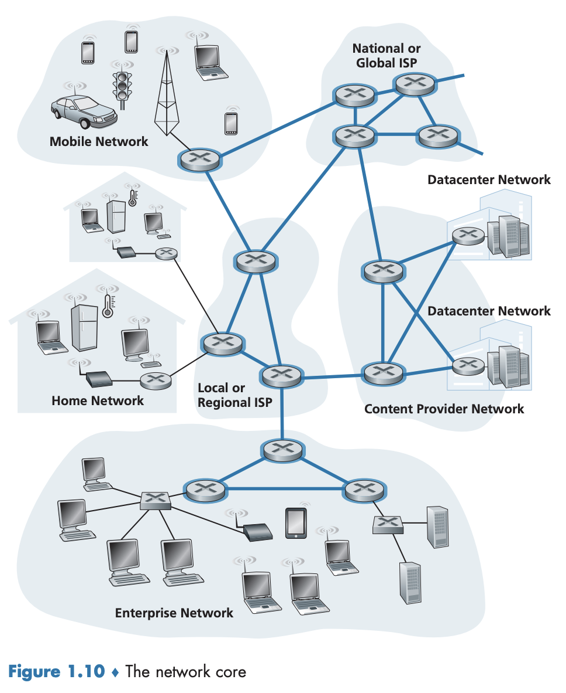
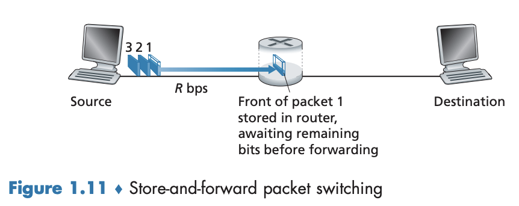
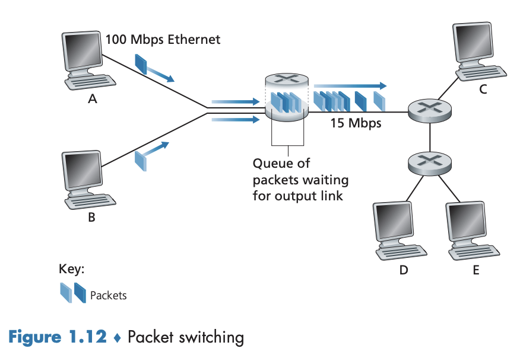
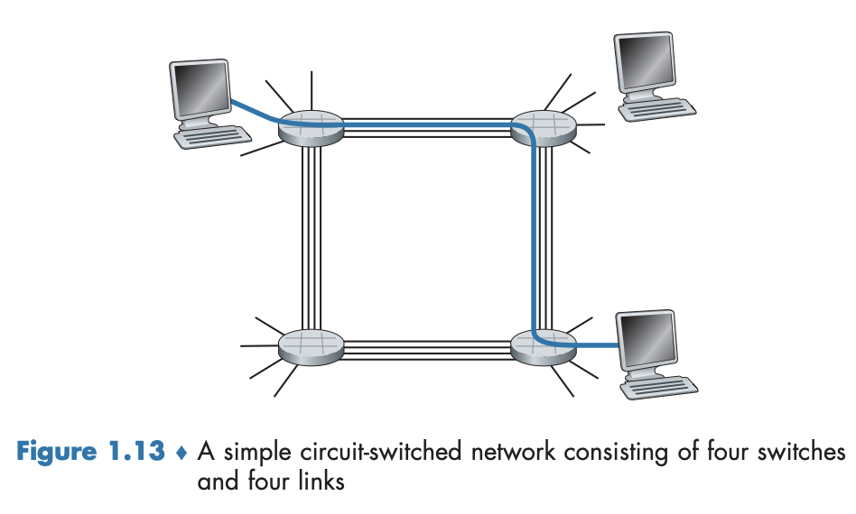
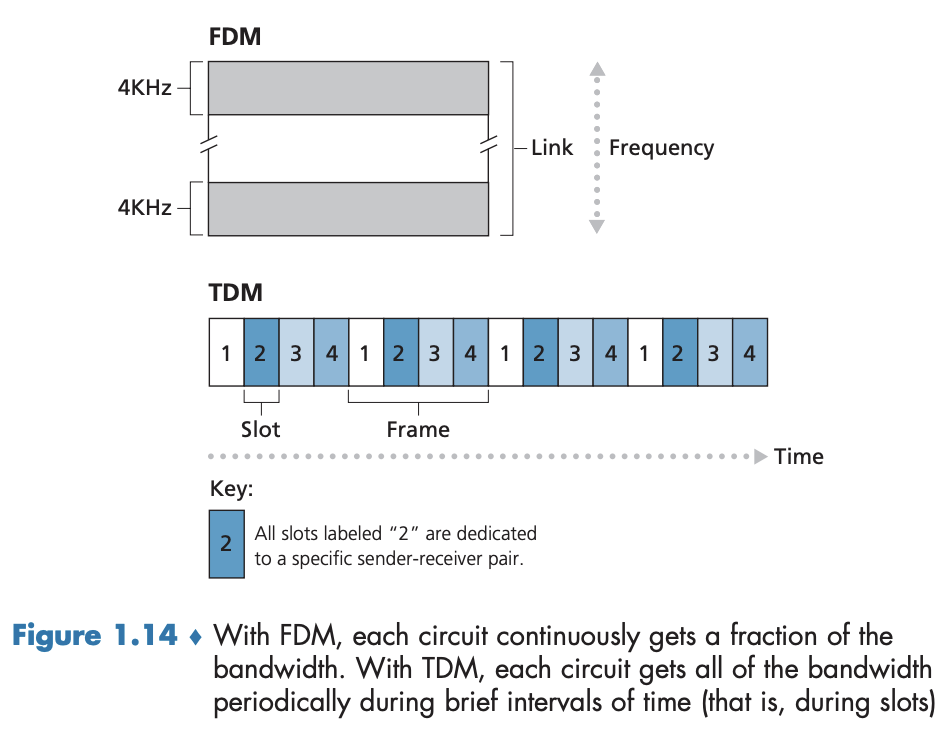
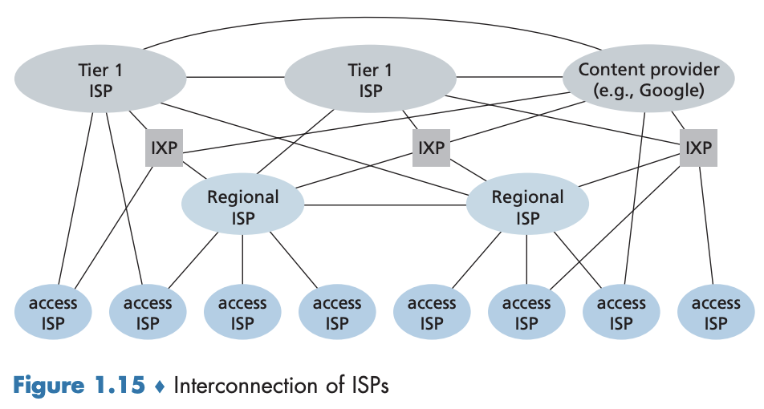

1.3 네트워크 코어
인터넷 가장자리를 살펴봤으므로 이제 네트워크 코어, 즉 인터넷의 종단 시스템을 연결하는 패킷 스위치와 링크의 그물망(mesh)을 좀 더 자세히 살펴보자. 그림 1.10의 굵은 선은 네트워크 코어를 나타내고 있다.

1.3.1 패킷 교환(packet switching)
네트워크 애플리케이션에서 종단 시스템들은 서로 메시지(message) 를 교환한다.
→ 제어 기능 혹은 전자메일 메시지, JPEG, MP3 같은 데이터를 포함
→ 출발지 종단 시스템에서 목적지 종단 시스템으로 메시지를 보냄.
- 송신 시스템은 긴 메시지를 패킷(packet) 이라고 하는 작은 데이터 덩어리로 분할한다.
- 각 패킷은 통신 링크와 패킷 스위치(packet switch) 를 거치게 된다. → 라우터(router) 와 링크 계층 스위치(link-layer switch) 의 두 가지 유형이 있음.
- 패킷은 링크의
최대전송률과 같은 속도로 각각의 통신 링크에서 전송된다. → 출발지 종단 시스템 혹은 패킷 스위치가 $R$ bps 속도로 링크에서 $L$ bits의 패킷을 송신한다면 그 패킷을 전송하는 데 걸리는 시간은 $L/R$ 초다.
저장-후-전달 전송(store-and-forward transmission)
- 대부분의 패킷 스위치가 이용하는 방식
- 스위치가 출력 링크로 패킷의 첫 비트를 전송하기 전에 전체 패킷을 받아야 한다.

❓그림 1.11과 같이 하나의 라우터로 연결되고 2개의 종단 시스템으로 구성된 간단한 네트워크를 고려해보자.
- 라우터는 보통 여러 개의 링크를 갖는데, 라우터의 기능이 입력되는 패킷을 출력 링크로 교환하는 것이기 때문이다. → 여기서는 매우 간단하게 표현함.
- 출발지는 목적지로 전송할 3개의 패킷이 있으며 각각은 $L$비트로 구성된다.
- 출발지는 $L$비트의 패킷을 $R$ bps의 속도로 송신하고 있다.
- 저장-후-전달을 채택하고 있기 때문에 수신한 비트를 바로 전송할 수 없다.
- 대신 그 패킷의 비트를 먼저 저장(buffer, 즉 ‘store’)한 후, 라우터가 패킷의 모든 비트를 수신한 후에만 출력 링크로 그 패킷을 전송(transmit, 즉 ‘forward’)하기 시작한다.
- 여기서 전파 지연(propagation delay, 비트가 빛의 속도에 가까운 속도로 통신선을 거쳐가는 데 걸리는 시간)은 무시하도록 하자.
- 패킷 하나를 보내는 데 걸리는 시간을 구해보자.
- $0$초
- 출발지는 패킷 1의 비트를 전송하기 시작
- $L/R$초
- 출발지는 패킷 1의 전체를 전송 완료, 패킷 1이 라우터에 수신되고 저장됨.
- 라우터가 전체 패킷(패킷 1)을 수신했고 목적지를 향해 출력 링크로 전송하기 시작함.
- $2L/R$초
- 라우터는 전체 패킷을 전송함.
- 수신 종단 시스템이 전체 패킷을 수신함.
- $0$초
→ 전체 지연은 $2L/R$이며 저장-후-전달 전송 방식을 채택하지 않으면 전체 지연은 $L/R$이 된다.
→ 패킷 3개를 보낸다면, 걸리는 시간(전체 지연)은 $4L/R$이 나올 것이다.
❓ 출발지로부터 목적지 노드까지 $N$개의 링크로 구성되고, 하나의 패킷을 전송하려면 전체 지연은 얼마나 나올까?
- 이 때 출발지와 목적지 사이에 $N-1$개의 라우터가 있다.
- 식을 구하면 아래와 같다. $$d_{\text{종단 간 지연}}=N\frac{L}{R}$$
큐잉 지연과 패킷 손실

❓ 연속된 $N$개의 링크를 통해 송신된 $P$개 패킷의 지연이 어떻게 되는지 알아보자.
- 각 패킷 스위치는 접속된 여러 개의 링크를 가지고 있으며, 각 링크에 대해 패킷 스위치는 출력 버퍼(output buffer, 출력 큐(output queue)라고도 함) 를 갖고 있으며 그 링크로 송신하려고 하는 패킷을 저장하고 있다. → 이는 패킷 교환에서 중요한 역할을 한다.
- 큐잉 지연(queueing delay)
- 도착하는 패킷이 한 링크로 전송되어야 하는데 그 링크가 다른 패킷을 전송하고 있다면 도착하는 패킷은 출력 버퍼에서 대기해야 한다. → 출력 버퍼에서 큐잉 지연을 겪게 됨.
- 가변적이고 네트워크의 혼잡 정도에 따른다.
- 패킷 손실(packet loss)
- 버퍼 공간의 크기는 유한하기 때문에 도착하는 패킷은 버퍼가 전송을 위해 대기 중인 다른 패킷들로 꽉 차 있는 경우를 당할 수 있다.
- 이때 도착하는 패킷 혹은 이미 큐에 대기 중인 패킷을 폐기(drop)한다.
❓ 그림 1.12에서 패킷은 3차원으로, 조각의 너비는 패킷의 비트 수를 나타낸다. 모든 패킷은 같은 너비와 같은 길이를 갖는다. 호스트 A와 B가 호스트 E로 패킷을 전송한다고 가정하자.
- 호스트 A와 B는 첫 번째 라우터로 100Mbps 이더넷 링크를 통해 패킷을 전송한다.
- 라우터는 다음에 이들 패킷을 15Mbps의 링크로 전달한다.
→ 짧은 기간 동안에 라우터에 도착하는 패킷의 전송률이 15Mbps를 초과하면 라우터에서 혼잡이 발생하게 되고 링크로 전송되기 전에 링크의 출력 버퍼에 큐잉된다.
→ 호스트 A와 B가 각각 동시에 연속해서 5개의 패킷을 송신하면 이들 패킷의 대부분은 큐에서 대기하는 데 시간을 보낼 것이다.
포워딩 테이블과 라우팅 프로토콜
라우터는 접속된 통신 링크 중 하나로 도착하는 패킷을 받아서 접속된 통신 링크 중 다른 링크로 그 패킷을 전달한다.
❓ 라우터는 어떻게 그 패킷을 어느 링크로 전달해야 하는지를 결정하는가?
- 인터넷에서 모든 종단 시스템은
IP 주소라고 하는 주소를 갖는다.- 출발지는 패킷의 헤더에 목적지의 IP 주소를 포함한다. → 이 주소는 계층적 구조를 갖는다.
- 패킷이 네트워크의 한 라우터에 도착하면 라우터는 패킷의 목적지 주소의 일부를 조사하고 그 패킷을 이웃 라우터로 전달한다.
- 각 라우터는 목적지 주소(혹은 목적지 주소의 일부)를 라우터의 출력 링크로 매핑하는 포워딩 테이블(forwarding table) 을 갖고 있다.
순서를 정리하면 아래와 같다.
- 패킷이 라우터에 도착한다.
- 라우터는 올바른 출력 링크를 찾기 위해 주소를 조사한다.
- 목적지 주소를 이용하여 포워딩 테이블을 검색한다.
- 라우터는 그 패킷을 출력 링크로 보낸다.
라우터가 포워딩 테이블 색인을 위해 그리고 올바른 출력 링크를 결정하기 위해 패킷의 목적지 주소를 이용한다.
❓ 포워딩 테이블은 어떻게 설정되는가?
- 인터넷은 자동으로 포워딩 테이블을 설정하는 데 이용되는 여러 특별한 라우팅 프로토콜(routing protocol) 을 갖고 있다.
- 예를 들어. 라우팅 프로토콜은 각 라우터로부터 각 목적지까지의 최단 경로를 결정하고 라우터에 포워딩 테이블을 설정하는 데 이 최단 경로 결과를 이용한다.
1.3.2 회선 교환(circuit switching)
링크와 스위치의 네트워크를 통해 데이터를 이동시키는 방식은 두 가지가 있다.
- 위에서 다뤘던 패킷 교환(packet switching)
- 지금 다뤄볼 회선 교환(circuit switching)
- 회선 교환 네트워크에서 종단 시스템 간에 통신을 제공하기 위해 경로상에 필요한 자원(버퍼, 링크 전송률)은 통신 세션(session) 동안에 확보 또는
예약(reserve)된다.- 패킷 교환 네트워크에서는 이러한 자원을 예약하지
않는다.
- 패킷 교환 네트워크에서는 이러한 자원을 예약하지
- 세션 메시지는 온디맨드(on-demand) 방식으로 자원을 요청하여 사용한다.
- 그 결과 통신 링크에 대한 접속을 위해 기다릴(즉, 큐에서 대기) 수도 있다.
회선 교환 네트워크의 예로 전통적인 전화망이 있다.
- 송신자가 정보를 보내기 전에 네트워크는 송신자와 수신자 간의 연결을 설정해야 한다.
- 이 연결을 회선(circuit) 이라고 하며 송신자와 수신자 간의 경로에 있는 스위치들이 해당 연결 상태를 유지해야 한다.
- 네트워크가 회선을 설정할 때, 그 연결이 이루어지는 동안 네트워크 링크(각 링크의 전송 용량의 일부를 나타냄)에 일정한 전송률을 예약한다.
- 주어진 전송률이 송신자-수신자 연결을 위해 예약되므로 송신자는 수신자에게
보장된(guaranteed)일정 전송률로 데이터를 보낼 수 있다.
종단 간 연결(end-to-end connection)

- 위 그림에 있는 네트워크는 4개의 회선 스위치가 4개의 링크에 연결되어 있다. 각 링크는 4개의 동시 연결을 지원할 수 있다. 호스트는 스위치 중 하나에 직접 연결된다.
- 두 호스트가 통신하고 싶을 때 네트워크는 두 호스트 사이에 지정된 종단 간 연결(end-to-end connection) 을 설정한다.
- 호스트 A가 호스트 B와 통신하기 위해 네트워크는 먼저 2개의 링크 각각에 한 회선을 예약한다(위 그림에서는 첫 번째 링크의 두 번째 회선을, 두 번째 링크의 네 번째 회선을 사용).
- 각 링크는 4개의 회선을 가지므로 종단 간 연결을 사용하는 각 링크에 대해 그 연결은 연결이 지속되는 동안 링크 전체 전송 용량의 1/4을 얻는다(이웃한 스위치 간에 각 링크가 1Mbps의 전송률을 갖는다면 각 종단 간 회선 교환 연결은 지정된 전송률의 250kbps를 얻게 된다).
❓ 인터넷 같은 패킷 교환 네트워크를 통해 다른 호스트로 패킷을 보낸다면 어떤 일이 발생할까?
- 회선 교환과 마찬가지로 패킷은 일련의 통신 링크를 통해 전송된다.
- 회선 교환과 달리 패킷은 링크 자원을 예약하지 않고 네트워크로 보내진다.
- 링크가 혼잡하다면 그 패킷은 송신 쪽 버퍼에서 기다려야 하고 지연이 발생한다.
인터넷은 최대한 빠르게 패킷을 전달하려고 최선을 다하지만 일정한 시간 내에 전달하는 것을 보장하지 않는다.
회선 교환 네트워크에서의 다중화
링크 내 한 회선은 두 가지 방법으로 구현된다.
- 주파수 분할 다중화(frequency-division multiplexing, FDM)
- 시분할 다중화(time-division multiplexing, TDM)
주파수 분할 다중화(frequency-division multiplexing, FDM)
- 링크를 통해 설정된 연결은 그 링크의 주파수 스펙트럼을 공유한다.
- 링크는 연결되는 동안 각 연결에 대해 주파수 대역을 고정 제공한다. → 전화망에서는 4 kHz 폭을 가지며, 이런 대역의 폭을 대역폭(bandwidth) 이라고 한다.
- FM 라디오 방송도 88 MHz - 108 MHz 사이의 주파수 스펙트럼을 공유하는데 FDM를 사용한다.
시분할 다중화(time-division multiplexing, TDM)
- 시간을 일정 주기의 프레임으로 구분하고 각 프레임은 고정된 수의 시간 슬롯으로 나뉜다.
- 네트워크가 링크를 통해 하나의 연결을 설정할 때, 네트워크는 모든 프레임에서 시간 슬롯 1개를 그 연결에 할당한다.
 그림 1.14는 4개 회선을 지원하는 특정 네트워크 링크에 대한 FDM과 TDM을 설명한다.
- FDM의 경우에는 주파수 영역의 4개 대역으로 분할되었고 각각은 4 kHz 대역폭을 갖는다.
- TDM의 경우에는 시간 영역이 시간 프레임으로 분할되고 각 프레임은 4개의 시간 슬롯을 갖는다.
- TDM 회선의 전송률: 한 슬롯 안의 비트 수 x 프레임 전송률
- 예들 들어, 링크가 초당 8,000 프레임을 전송하고 각 슬롯이 8비트로 구성된다면 회선의 전송률은 64kbps다.
❓그렇다면 회선 교환 네트워크를 통해 호스트 A에서 호스트 B까지 640,000비트의 파일을 보내는 데 걸리는 시간을 계산해보자. 네트워크의 모든 링크는 24개의 슬롯을 가진 TDM을 사용하고 1.536Mbps 전송률이 가능하다고 가정하자. 또한 호스트 A가 파일을 전송하기 전에 종단 간 회선을 설정하는 데 0.5초가 걸린다고 하자.
- 각 회선의 전송률은 (1.536Mbps)/24 = 64kbps
- 파일을 전송하는 시간은 (640,000)/(64kbps) = 10초
- 회선 설정 시간까지 더하면 총 10.5초
💡전송(transmission) 시간은 링크 수와 무관하다. 즉, 종단 간 회선이 하나 혹은 100개의 링크를 지나더라도 10초다(실제 종단 간 지연에는 전파 지연도 포함).
패킷 교환 대 회선 교환
패킷 교환 옹호자: 회선 교환의 경우 할당된 회선이 비활용 기간(silent period) 에는 놀게 되므로 낭비라고 주장한다.
- 예시
- 전화 통화를 할 때 사람이 이야기를 중단하더라도 사용되지 않는 네트워크 자원(연결 경로상의 링크 주파수 대역이나 슬롯)은 다른 진행 중인 연결이 대신해서 사용할 수 없다.
- 방사능 과학자의 경우 연결을 설정하고, 이미지를 요청하고, 관찰할 때 관찰하는 동안에도 자원을 점유하고 있으므로 네트워크 자원이 낭비된다.
- 회선 교환에서 종단 간 회선을 설정하고 대역폭을 보존하는 것이 복잡하고 경로에 있는 스위치들 사이의 운영을 조절하는 복잡한 신호 소프트웨어가 필요하다.
- 다른 주장들
- 패킷 교환이 회선 교환보다 전송 용량의 공유에서 더 효율적이다.
- 패킷 교환이 더 간단하고 효율적이며 회선 교환보다 구현 비용이 적다.
회선 교환 옹호자: 패킷 교환의 경우 가변적이고 예측할 수 없는 종단 간의 지연(주로 불규칙적이고 예측할 수 없는 큐잉 지연에서 발생) 때문에 실시간 서비스에는 적당하지 않다고 주장한다.
❓과연 누구의 주장이 옳을까?
첫 번째 예시
사용자가 1Mbps 링크를 공유한다고 가정하자. 또한 각 사용자는 활동 시간(100 kbps의 일정 속도로 데이터를 생산할 때)과 비활동 시간(데이터를 생산하지 않을 때)을 반복한다고 가정하자. 그리고 사용자는 전체 시간에서 10%만 활동한다고 하자.
-
회선 교환
- 회선 교환의 경우 100kbps가 항상
각각의사용자에게예약되어야 한다. TDM의 경우 1초 프레임이 100ms마다 10개 시간 슬록으로 나뉜다면 각 사용자에게는 한 프레임에 한 번의 시간 슬롯이 할당된다. - 회선 교환 링크는 동시에 10명(= 1Mbps/100kbps)만 지원할 수 있다.
- 회선 교환의 경우 100kbps가 항상
-
패킷 교환
- 한 특정 사용자가 활동하고 있을 확률은 10%다. 35명의 사용자가 존재할 때 11명 이상의 사용자가 동시에 활동할 확률은 약 0.04%다.
- 10명 이하의 동시 사용자가 있다면(99.96%), 데이터의 통합 도착률은 1Mbps(링크의 출력률)보다 작거나 같다(이상일 경우 패킷의 통합 도착률이 링크의 출력 용량을 초과하므로 출력 큐가 커지기 시작한다).
→ 즉 10명 이상의 동시 사용자가 있을 확률은 매우 작으므로 패킷 교환은 거의 항상 회선 교환과 대등한 지연 성능을 가지면서도 거의 3배 이상의 사용자 수를 허용한다.
두 번째 예시
10명의 사용자가 있다고 가정하자. 한 사용자가 한 번의 1,000비트 패킷을 1,000개 생성하고 다른 사용자는 패킷을 생성하지 않는다.
-
회선 교환
- 한 프레임은 10개의 슬롯으로 구성되고 각 슬롯은 1,000비트로 구성된 TDM 회선 교환의 경우, 사용자는 데이터 전송을 위해 한 프레임 당 1개의 시간 슬롯만 사용할 수 있다. 그리고 각 프레임에 남겨진 9개의 시간 슬롯은 쉬는 상태가 된다.
- 100만 비트를 모두 전송하는 데 걸리는 시간은 10초가 걸린다.
-
패킷 교환
- 패킷을 생성하는 다른 사용자가 없기에 다중화가 요구되지 않는다.
- 1Mbps의 링크가 가득 찰 때까지 패킷을 계속 보낼 수 있다. 따라서 1초 만에 데이터가 전송된다.
→ 패킷 교환이 회선 교환보다 더 우수하며 링크 전송률을 공유하는 두 방식의 가장 큰 차이점은 회선 교환이 요구에 관계없이 전송 링크의 사용을 할당하는 반면에 패킷 교환은 요구할 때만 링크의 사용을 할당한다는 것이다.
→ 두 방식 모두 전기통신 네트워크에서 널리 이용되지만 그 추세는 패킷 교환으로 바뀌고 있다.
- 오늘날의 많은 회선 교환 전화망이 패킷 교환으로 전환되고 있다(특히 해외 통화).
1.3.3 네트워크의 네트워크(Network of Network)
인터넷을 이해하는 데 중요한 문구
- 종단 시스템이 접속 ISP를 통해 인터넷에 연결되며 접속 ISP는 DSL, 케이블, FTTH, 와이파이, 셀룰러를 포함하는 다양한 접속 기술을 이용하여 유선 혹은 무선 연결을 제공한다.
- 접속 ISP는 텔코 혹은 케이블 회사 뿐만 아니라 대학교, 회사가 될 수도 있다.
- 종단 사용자들과 콘텐츠 제공자들을 접속 ISP로 연결하는 것은 수십억 개의 종단 시스템을 연결하는 퍼즐의 극히 일부분인데 이 퍼즐을 해결하려면 접속 ISP들이 서로 연결되어야만 한다.
→ 이를 위해 네트워크의 네트워크(network of network) 가 탄생하게 되었다.
❓인터넷 네트워크 구조를 이해하기 위해 일런의 네트워크 구조를 구현해보자.
- 목표: 모든 종단 시스템이 서로에게 패킷을 보낼 수 있도록 접속 ISP를 연결한다.
- 각 접속 ISP를 직접 서로 다른 ISP와 연결하는 그물망 설계는 단순하지만 매우 많은 비용을 발생시킨다.
- 각 접속 ISP가 전 세계적으로 다른 접속 ISP와 수십만 개의 개별적인 통신 링크를 유지해야 한다.
네트워크 구조 1
모든 접속 ISP를 하나의 글로벌 통과(transit) ISP와 연결한다.
- (상상의) 글로벌 통과 ISP: 라우터와 전 세계에 이르고 적어도 수십만 개의 접속 ISP와 가까운 곳에 있는 라우터를 갖는 통신 링크의 네트워크
- 이러한 확장된 네트워크를 구축하는 데는 매우 많은 비용이 들며, 이익을 얻기 위해 각각의 접속 ISP에 연결을 위한 과금을 부과한다. 과금은 접속 ISP가 글로벌 ISP와 교환하는 트래픽의 양을 반영한다.
- 접속 ISP가 글로벌 ISP에게 요금을 지불하기 때문에 접속 ISP는 고객(customer) 이고 글로벌 ISP는 제공자(provider) 다.
네트워크 구조 2
글로벌 ISP가 여러 개 있을 수도 있다(자연스러운 현상). 즉, 수십만 개의 접속 ISP와 다중의 글로벌 ISP로 구성된다.
- 글로벌 ISP끼리 경쟁하면서 더 나은 가격과 서비스를 제공하는 것이 바람직하다.
- 그러나 글로벌 ISP들은 서로 연결되어야 한다. 그렇지 않으면 하나의 글로벌 ISP와 연결된 접속 ISP는 다른 글로벌 통과 서비스 제공자에 연결된 접속 ISP와 통신할 수 없다.
- 상위층에 글로벌 통과 서비스 제공자가 있고 하위층에 접속 ISP가 있는 형태의 2계층 구조다.
- 글로벌 ISP가 모든 접속 ISP에 가깝게 도달할 수 있을 뿐만 아니라 경제적으로 그렇게 하는 것이 바람직하다는 것을 가정하고 있다.
네트워크 구조 3
오늘날의 인터넷과 유사한 구조. 네트워크 구조2와 달리 ’여러 개의 계층 구조’로 구성된다.
- 전 세계의 모든 도시에 존재하는 ISP는 없다.
- 대신 어느 주어진 지역에서 그 지역에 있는 접속 ISP들이 연결하는 지역(regional) ISP 가 있다.
- 각 지역 ISP는 1계층(tier-1) ISP 들과 연결된다. → (상상의) 글로벌 ISP와 유사함.
- 대략적으로 12개 정도의 1계층 ISP가 있다(Level 3 Communications, AT&T, Sprint 등)
- 각 지역 ISP는 경쟁하기도 하며 각각의 접속 ISP는 연결하는 지역 ISP에게 요금을 지불하고 각 지역 ISP는 자신이 연결하는 1계층 ISP에 요금을 지불한다(접속 ISP에서 1계층으로 직접 연결도 가능).
- 계층구조의 각 레벨에 고객-제공자 관계가 있다(1계층은 최상위 계층이라 제외).
- 지역 ISP 중에는 더 큰 ISP가 있을 수도 있다(예를 들어 국가 ISP-지방 ISP 관계)
네트워크 구조 4
PoP(points of presence), 멀티홈(multi-homing), 피어링(peering), IXP(Internet eXchange Point) 를 네트워크 구조 3에 포함시켜야 한다.
- PoP는 최하위(접속 ISP) 계층을 제외하고 모든 계층에 존재한다.
- 제공자의 네트워크 내에 엤는 하나 혹은 그 이상의 라우터 그룹
- 고객 네트워크가 제공자의 PoP에 연결되기 위해, 고객은 자신의 라우터 중 하나를 PoP에 있는 라우터에 직접 연결하도록 고속 링크를 제3자(third-party) 통신 서비스 제공자로부터 임대할 수 있다.
- (1계층 ISP를 제외한)모든 ISP는 멀티홈, 즉 둘 혹은 그 이상의 제공자 ISP에 연결하도록 선택할 수 있다.
- 예를 들어, 한 접속 ISP가 2개의 지역 ISP와 연결하거나 2개의 지역 ISP와 함께 하나의 1계층 ISP에 연결할 수도 있다.
- 한 지역 ISP는 다중의 1계층 ISP들과 연결할 수 있다.
- 한 ISP가 멀티홈을 하면 서비스 제공자 중 하나가 연결되지 않더라도 인터넷으로 패킷을 계속해서 송수신할 수 있다.
- 고객 ISP는 글로벌 인터넷 연결성(interconnectivity)을 얻기 위해 서비스 제공 ISP에게 요금을 지불하는데, 그 서비스 제공자와 교환하는 트래픽의 양을 반영한다. 이 비용을 줄이기 위해, 인터넷 계층구조와 같은 계층에 있는 가까운 ISP들은 피어링을 할 수 있다.
- 이들 간에 송수신되는 모든 트래픽을 상위 계층 ISP를 통하지 않고 직접 송수신할 수 있도록 네트워크를 서로 연결한다.
- 두 ISP가 피어링하면 일반적으로 서로 요금을 지불하지 않는다.
- 1계층 ISP들도 서로 피어링을 할 수 있다.
- 제 3의 회사가 IXP를 구축할 수 있으며 이는 다중의 ISP들이 서로 피어링할 수 있는 만남의 장소라고 할 수 있다.
네트워크 구조 5
네트워크 구조 4 위에 콘텐츠 제공자 네트워크(content-provider network) 를 추가한 구조. 그림 1.15와 같다.

- 현재 구글이 이러한 콘텐츠 제공자 네트워크를 주도하는 한 예다.
- 19개의 주요 데이터 센터를 가짐.
- 각각의 데이터 센터는 만 개에서 십만 개 정도의 서버들로 구성
- 수백 대의 서버들로 구성된 작은 데이터 센터들도 있는데 주로 IXP 내에 위치함.
- 모두 구글의 사설 TCP/IP 네트워크를 통해 연결되어 있음.
- 하위 계층 ISP들과 피어링 함으로써 인터넷의 상위 계층을 ’우회(bypass)’하고 있음.
- 많은 접속 ISP는 여전히 1계층 네트워크를 통해서만 도달하므로 구글 네트워크도 1계층 ISP에 요금을 지불하고 있음. 하지만 자신의 네트워크를 구축함으로써 지불하는 요금을 줄이고 더 많은 통제권을 가짐.